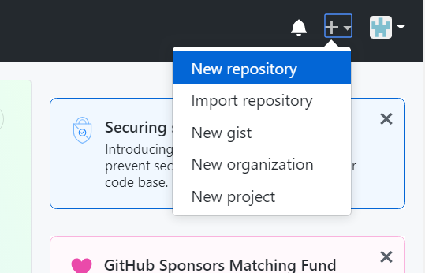
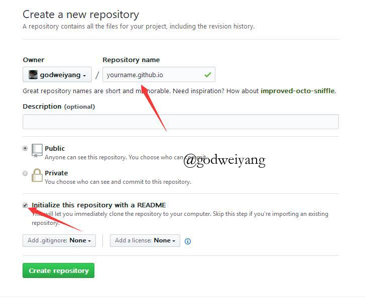
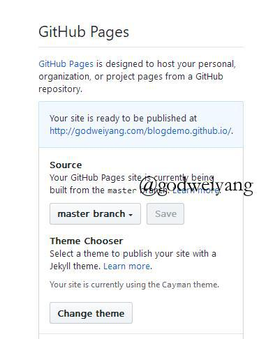
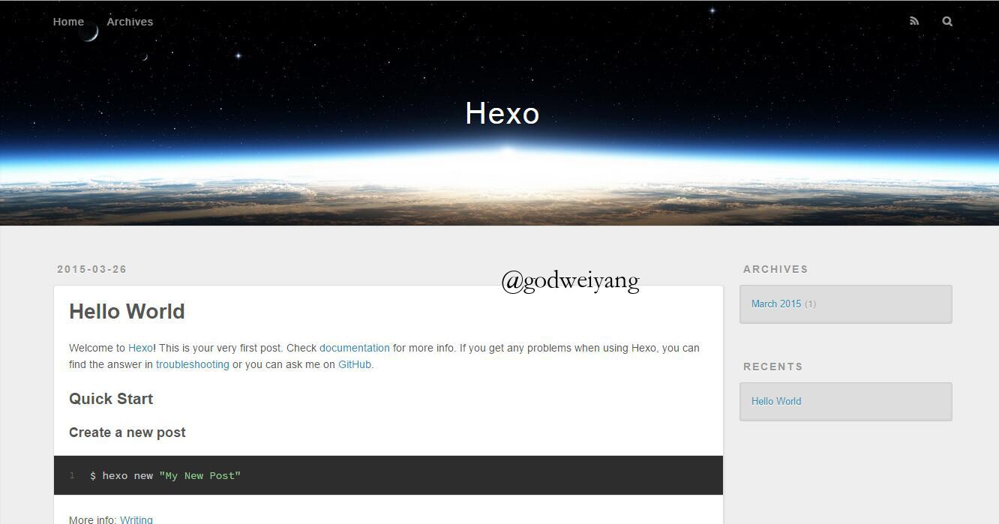
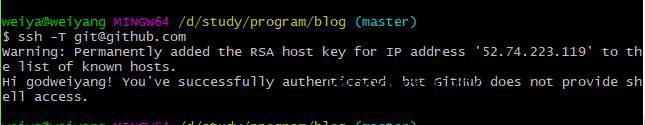

有任何问题请联系我扣扣：1260842695，vx：szhll5201314，24小时随时在线哦
如果觉得有用的话可以看心情打赏一杯奶茶，我会很开心哒。
我的博客源代码地址
大家可以直接素质二连，star&fork我的博客源代码：https://github.com/leblog
然后改改配置就可以写文章啦。
首先将所有文件下载到本地。
解压node_modules.zip，然后删除node_modules.zip和.git文件夹。
还缺一个字体（为图片添加水印需要用到），去C:\Windows\Fonts下找到STSong Regular，复制到hexo-matery-modified文件夹下。
快速搭建
如果你不想自己从头开始慢慢自定义主题的话，可以直接下载我的修改好的主题，然后稍微修改几个地方就好了：
根目录配置文件_config.yml和主题目录配置文件_config.yml中修改个人信息。
根目录配置文件中修改deploy一栏的repository。
根目录配置文件中修改baidu_url_submit一栏的token。
主题配置文件中修改gitalk一栏，修改方法见正文。
当然前提是个性化设置章节之前的环境还是需要配置好！
平时常用命令：
hexo g # 生成博客网页文件
hexo s # 本地预览博客
hexo d # 上传网页文件到github
前言
17年9月的时候开始搭建了第一个自己的独立博客，到现在也稍微像模像样了。很多小伙伴应该也想过搭建一个自己的博客，网上也有一堆详细教程。我在此稍稍总结一下具体的搭建步骤，另外网上很少有修改博客源码的个性化教程，我就稍稍分享一下我的一些修改经验，更多的个性化操作需要你自己以后去摸索。
具体效果可以参观我的博客：leblog.github.io，欢迎大家支持。
我不是一个前端程序员，有些东西不是很了解，写的有问题或有改进的地方请大家指出。
首先要了解一下我们搭建博客要用到的框架。Hexo是高效的静态站点生成框架，它基于Node.js。通过Hexo，你可以直接使用Markdown语法来撰写博客。相信很多小伙伴写工程都写过README.md文件吧，对，就是这个格式的！写完后只需两三条命令即可将生成的网页上传到你的github上，然后别人就可以看到你的网页啦。是不是很简单？你无需关心网页源代码的具体细节，你只需要用心写好你的博客内容就行。
目录结构
- 安装Node.js
- 添加国内镜像源
- 安装Git
- 注册Github账号
- 安装Hexo
- 连接Github与本地
- 写文章、发布文章
安装Node.js
首先下载稳定版Node.js，我这里给的是64位的。
安装选项全部默认，一路点击Next。
最后安装好之后，按Win+R打开命令提示符，输入node -v和npm -v，如果出现版本号，那么就安装成功了。
添加国内镜像源
如果没有梯子的话，可以使用阿里的国内镜像进行加速。
npm config set registry https://registry.npm.taobao.org
安装Git
为了把本地的网页文件上传到github上面去，我们需要用到分布式版本控制工具————Git[下载地址]。
安装选项还是全部默认，只不过最后一步添加路径时选择Use Git from the Windows Command Prompt，这样我们就可以直接在命令提示符里打开git了。
安装完成后在命令提示符中输入git –version验证是否安装成功
注册Github账号
接下来就去注册一个github账号，用来存放我们的网站。大多数小伙伴应该都有了吧，作为一个合格的程序猿（媛）还是要有一个的。
打开https://github.com/，新建一个项目，如下所示：

然后如下图所示，输入自己的项目名字，后面一定要加.github.io后缀，README初始化也要勾上。名称一定要和你的github名字完全一样，比如你github名字叫abc，那么仓库名字一定要是abc.github.io

然后项目就建成了，点击Settings，向下拉到最后有个GitHub Pages，点击Choose a theme选择一个主题。然后等一会儿，再回到GitHub Pages，会变成下面这样：

然后完成。
安装Hexo
在合适的地方新建一个文件夹，用来存放自己的博客文件，比如我的博客文件都存放在D:\study\program\blog目录下。
在该目录下右键点击Git Bash Here，打开git的控制台窗口，以后我们所有的操作都在git控制台进行，就不要用Windows自带的控制台了。
定位到该目录下，输入npm i hexo-cli -g安装Hexo。会有几个报错，无视它就行。
安装完后输入hexo -v验证是否安装成功。
然后就要初始化我们的网站，输入hexo init初始化文件夹，接着输入npm install安装必备的组件。
这样本地的网站配置也弄好啦，输入hexo g生成静态网页，然后输入hexo s打开本地服务器，然后浏览器打开http://localhost:4000/，就可以看到我们的博客啦，效果如下：

按ctrl+c关闭本地服务器。
连接Github与本地服务器
首先右键打开git bash，然后输入下面命令：
git config --global user.name "lebolg"
git config --global user.email "1260842695@qq.com"
用户名和邮箱根据你注册github的信息自行修改。
然后生成密钥SSH key：
ssh-keygen -t rsa -C "1260842695@qq.com"
打开github，在头像下面点击settings，再点击SSH and GPG keys，新建一个SSH，名字随便。
git bash中输入
cat ~/.ssh/id_rsa.pub
将输出的内容复制到框中，点击确定保存。
输入ssh -T git@github.com，如果如下图所示，出现你的用户名，那就成功了。

打开博客根目录下的_config.yml文件，这是博客的配置文件，在这里你可以修改与博客相关的各种信息。
修改最后一行的配置：
deploy:
type: git
repository: https://github.com/lebolg/lebolg.github.io
branch: master
repository修改为你自己的github项目地址。
写文章、发布文章
首先在博客根目录下右键打开git bash，安装一个扩展npm i hexo-deployer-git。
然后输入hexo new post “article title”，新建一篇文章。
然后打开D:\study\program\blog\source_posts的目录，可以发现下面多了一个文件夹和一个.md文件，一个用来存放你的图片等数据，另一个就是你的文章文件啦。
编写完markdown文件后，根目录下输入hexo g生成静态网页，然后输入hexo s可以本地预览效果，最后输入hexo d上传到github上。这时打开你的github.io主页就能看到发布的文章啦。